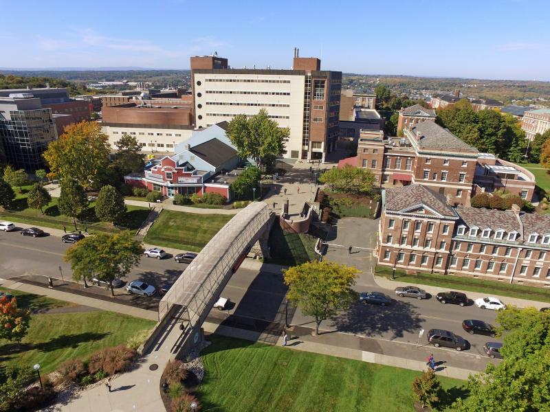

If you are interested in joining our lab, please review the following information regarding available openings.
Prospective Ph.D. students should apply through the Department of Electrical, Computer, and Systems Engineering's Ph.D. program webpage. When applying, kindly designate me as a potential advisor in your application. I will make sure to read your materials. If you wish to contact me directly, please use the email subject line "[PRSP PhD] + your current position and institute/organization" to help me prioritize your message. While I strive to read all messages, I may not be able to respond to all of them. Sending a brief email with a clear motivation usually facilitates communication.
If you are a master's student (or exceptional undergraduate) at RPI and have an interest in joining our research endeavors, please feel free to get in touch with me. When reaching out, kindly provide a brief introduction to your background and past experience.
I welcome inquiries from Ph.D. and master's students who are interested in having me serve on their dissertation/thesis committees. If our research interests align, I am eager to discuss these opportunities. To ensure effective coordination, please contact me with ample advance notice.
I welcome inquiries from individuals interested in becoming visiting scholars. Please don't hesitate to contact me. However, it is essential to find a suitable match between the research topics of our research group and those of prospective visiting scholars in order for me to host them.
Our lab is located at Room 2318, JEC building at RPI
